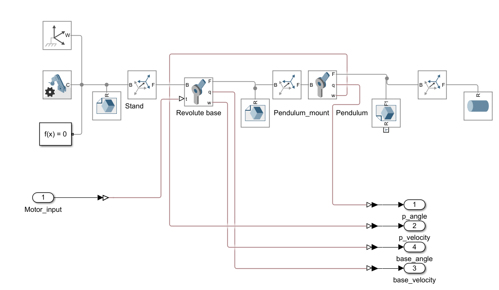
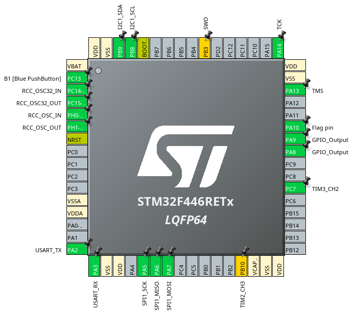

The pendulum model in the Simscape Mechanics Explorer.
| Controller board | STM32 Nucleo-F446RE |
| Motor driver | X-NUCLEO-IHM01A1 stepper driver expansion board |
| Motor | 17HE12-1204S NEMA17 stepper |
| Sensor | AS5600 magnetic encoder |
| Development | STM32CubeIDE |
A Furuta pendulum, also called a rotary inverted pendulum, modelled in Onshape. I built the parts, combined them into an assembly with mates, and animated the motion.

The built pendulum on hardware.
